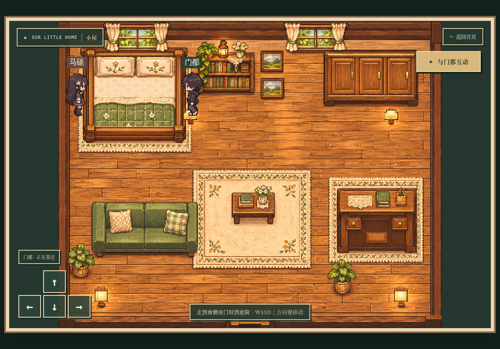
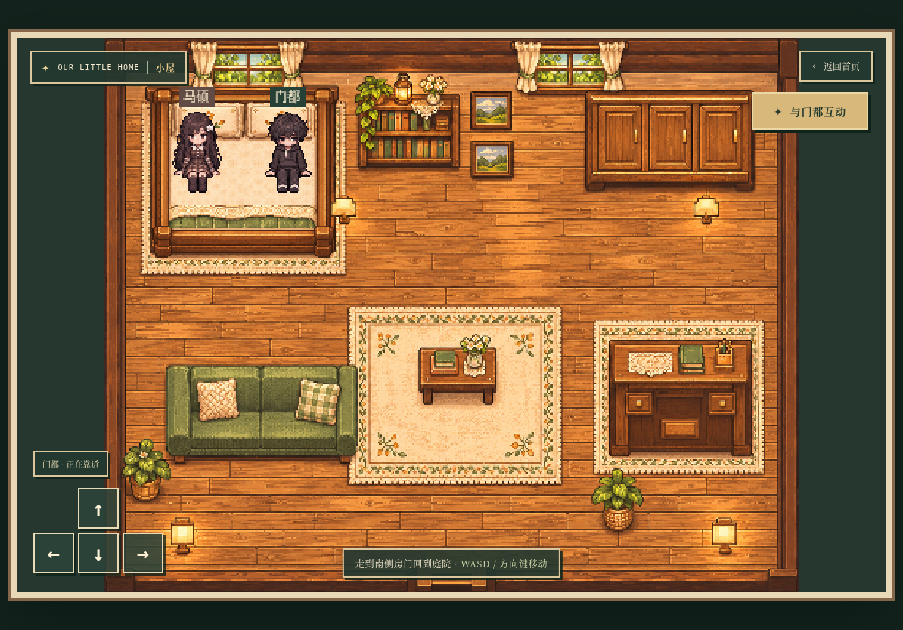
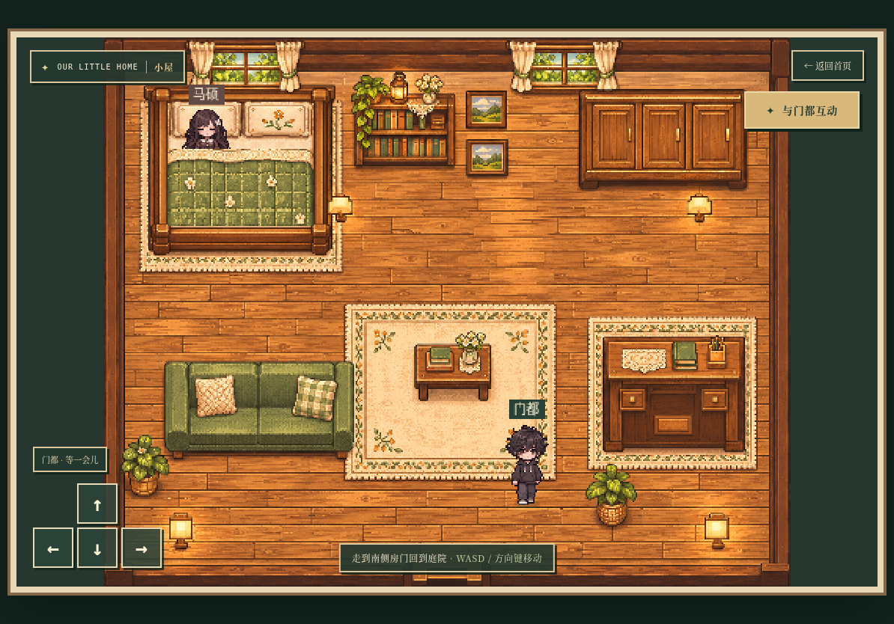
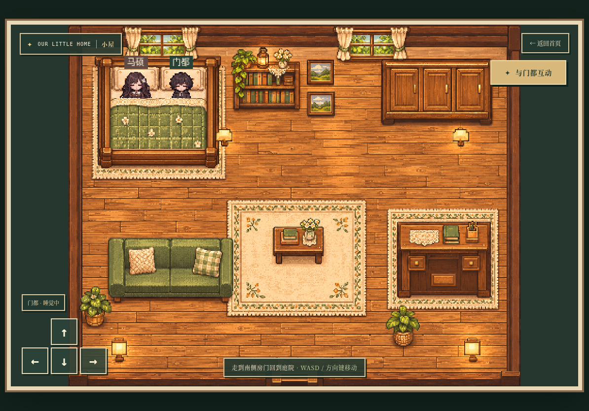
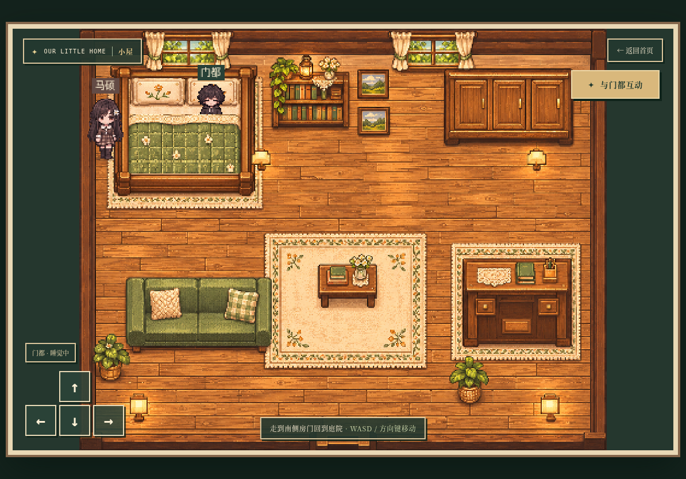

Our Little Home · 双人独立睡眠
进入真实室内游戏，点击「与门都互动」，选择马硕先睡、门都先睡或一起睡觉。起床按钮可分别唤醒一人；按方向键会让马硕起床。菜单可上下滚动。
以下截图与视频录自实际 Phaser 游戏，1194×834 Chromium 触控模拟；真实 iPad Safari 仍待设备验收。人物和床铺为 AI 辅助原创素材，逐像素清理并离线打包，未修改人物四向行走与房间布局。
床边准备、被子正在掀开
被子掀开，人物坐入床铺再躺下
马硕先睡，门都仍站立
双人盖被睡眠
马硕起床，门都继续睡